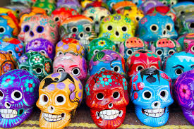

La artesanía es la creación de objetos o productos utilizando habilidades y técnicas tradicionales, a menudo de manera manual, con un enfoque en la calidad, la singularidad y el valor estético. Los artesanos suelen trabajar con materiales como madera, metal, cerámica, tejidos, vidrio, cuero y otros, transformándolos en piezas únicas o en series limitadas. La artesanía puede abarcar una amplia gama de productos, desde objetos decorativos hasta prendas de vestir, muebles, utensilios de cocina, joyas y más. Los artesanos suelen seguir métodos de producción más tradicionales y pueden incorporar técnicas ancestrales transmitidas de generación en generación, así como también innovaciones contemporáneas. A lo largo de la historia, la artesanía ha sido una parte importante de la cultura y la economía de muchas sociedades, y ha desempeñado un papel crucial en la preservación de tradiciones y técnicas culturales. Además, la artesanía a menudo se valora por su calidad artística, su originalidad y su conexión con la identidad cultural de una comunidad o región. En la actualidad, la artesanía sigue siendo apreciada por muchas personas tanto por su valor estético como por su autenticidad y su conexión con la historia y la cultura. Además, con el resurgimiento del interés en la producción local y sostenible, la artesanía ha experimentado un renovado interés y reconocimiento en muchos lugares del mundo.
.jpeg)
Los mejores lugares para ver artesania
|  |
|---|